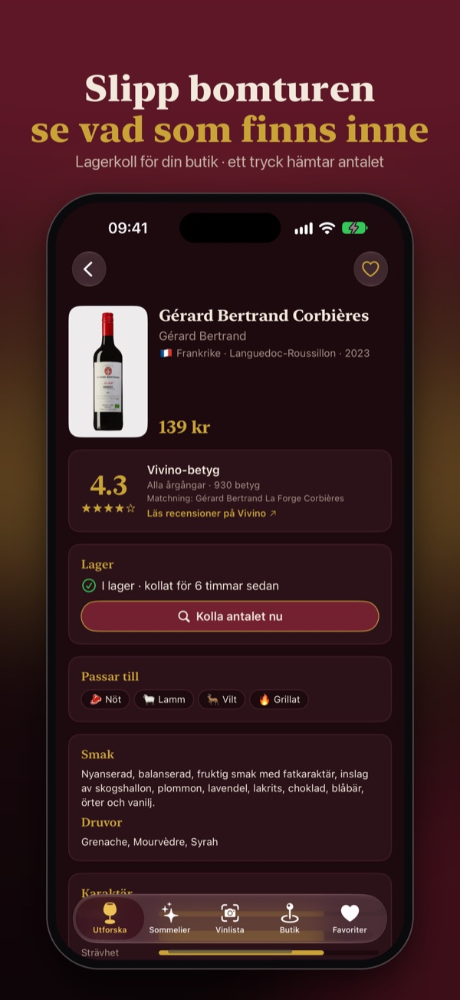

Vilket är det bästa vinet i lager på ditt Systembolag?
Välj din Systembolagsbutik och se vinerna som finns i lager där, rankade efter betyg från tusentals andra vinälskare. Fråga på vanlig svenska: ”rött vin till lamm under 150 kr”. På restaurangen: fotografera vinlistan.
Hämta i App StoreiPhone med iOS 17 eller senare · sommeliern svarar via nätet, och med appens egna regler utan · Android? Säg till
- Hela butikssortimentet
- Lager direkt
- Sommelier på svenska
- Oberoende av Systembolaget
- Även i Norge




Lagret i din butik, rankat
Vad kan VinGPT hjälpa till med?
Inte hela Sverige. Butiken du faktiskt går till, och det som finns där nu.
Lagret i din butik, rankat
Det som finns i butiken du går till, sorterat efter betyg. Filtrera på pris, vintyp, land och vad du ska äta.
Lager direkt
Tryck ”Kolla lager” och se hur många flaskor butiken har just nu. Slut? Appen visar butiker i närheten som har vinet.
Fråga sommeliern
”Något gott till tacos under 120 kr?” Svaret är viner som finns i din butik, med motivering per flaska. Körs i telefonen, inget skickas iväg.
Skanna vinlistan
Fotografera vinlistan på restaurangen och se vinerna rankade inom det du vill betala. Bilden läses i telefonen.
Alkoholfritt, sorterat på färg
Rött, vitt och rosé utan alkohol, rankat som allt annat. Slå på knappen i avancerad sökning.
Favoriter utan konto
Markera viner du vill komma ihåg. De följer ditt eget iCloud till nästa telefon, utan inloggning.
Så fungerar det
- Välj butikDen du handlar i, eller den närmaste just nu.
- Se lagret rankatTopp tio först, resten under ”Visa fler”. Filtrera på pris och typ.
- Fråga eller skannaStäll en fråga till sommeliern, eller fotografera vinlistan.
Se appen
Nästa gång du står på Systembolaget
Öppna appen, välj butiken, se vad som är bäst i lager.
Hämta i App StoreVanliga frågor
Varifrån kommer betygen?
Från tusentals vanliga vindrickare som har betygsatt vinet, inte från en enskild recensent. Appen visar snittet och hur många som står bakom det, och visar aldrig en siffra den inte har.
Varför visar appen ett annat lager än butiken har?
Lagerlistan (vilka viner butiken har i lager) uppdateras löpande och visar när den senast kollades. Listan säger om ett vin finns i lager, men inte hur många flaskor. Antalet flaskor hämtas direkt från Systembolaget när du trycker ”Kolla lager” på vinkortet. Dra nedåt i listan för att uppdatera lagerlistan.
Varför saknar ett vin betyg?
Betyg finns för de flesta viner i butikernas sortiment. Viner i beställningssortimentet och helt nya årgångar kan sakna betyg — då står det att vinet saknar betyg, i stället för att appen gissar.
Sommeliern svarade konstigt eller fel
Från version 1.3.1 svarar sommeliern med språkmodellen Claude via vår tjänst — samtalet sparas inte hos oss (se integritet). Den kan bara föreslå viner som finns i Systembolagets sortiment, och motiveringen vid varje vin kommer från Systembolagets egna beskrivningar. Blir ett svar ändå fel, tryck tummen ned och berätta vad som blev fel — det hjälper oss mycket.
Behöver jag ett konto?
Nej. Ingen inloggning och ingen registrering. Favoriter följer ditt eget iCloud automatiskt.
Är VinGPT en del av Systembolaget?
Nej. VinGPT är en fristående app som inte är ansluten till Systembolaget. Appen säljer inte alkohol och har ingen köpfunktion.
Finns appen i Norge?
Ja, med Vinmonopolets butiker: VinGPT for Norge.
Finns appen för Android?
Inte än, bara för iPhone. Vill du ha den på Android? Säg till via e-post, så hör vi av oss om den kommer. Det hjälper oss också att se om det är värt att bygga.
Utgivare
VinGPT ges ut av Siphon AS (org.nr. 998 610 672), Jacob Aalls gate 14A, 0368 Oslo, Norge.
Kontakt
Feedback och felrapporter: support.vingpt@vingpt.no
(eller använd ”Skicka feedback” i appen — då följer version och katalogdatum med automatiskt).